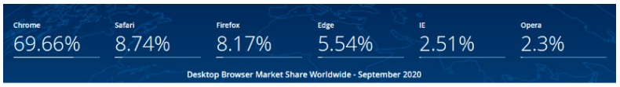
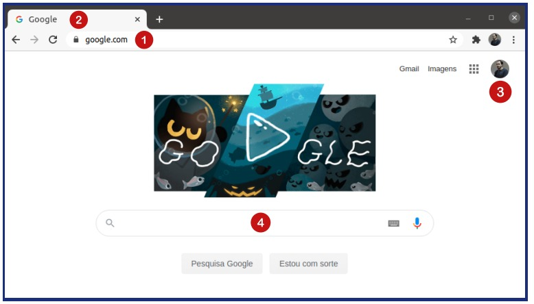
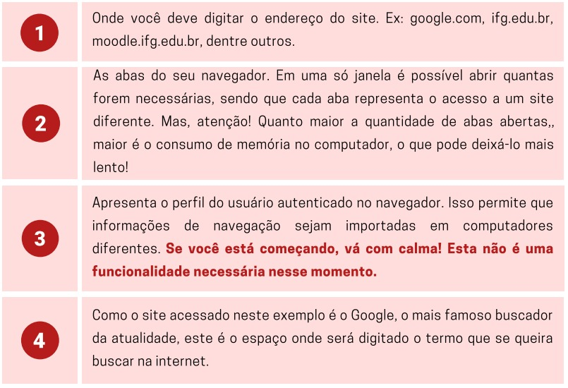
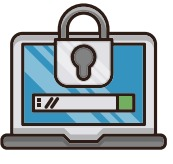
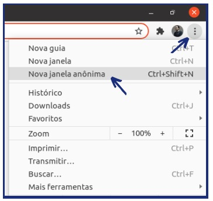

Navegadores e Internet
Para navegar na internet através do seu computador é necessário um software específico conhecido como navegador web. Existem hoje no mercado várias opções de fabricantes diferentes. Veja no infográfico a seguir os principais:
De acordo com o site Statcounter, o navegador Google Chrome saltou para o topo dos 5 navegadores mais utilizados pelos usuários no mundo. Essa pesquisa mostrou que, de janeiro de 2009, quando praticamente tinha 0% de usuários, passou para 69.66% em setembro de 2020, sendo considerado o navegador web mais utilizado no mundo. O quadro abaixo apresenta os dados atuais de uso desses navegadores:
Navegando na Internet
Ao acessar a área de trabalho do seu computador, procure pelo ícone do navegador preferido. Ele pode ser encontrado na barra de tarefas, no menu iniciar ou mesmo na tela, caso tenha sido adicionado como um atalho. Ao executá-lo, o programa abrirá a página de navegação, que normalmente é carregada em branco, aguardando que você, usuário, digite o endereço correspondente para navegação ou pesquisa. A imagem abaixo mostra o navegador Google Chrome aberto com as numerações de alguns campos indicados. Veja o significado de cada um deles:
 Dicas de segurança para navegação na web
Tendo em vista a grande utilização da internet para realização de compras, pagamentos, transferências e outras aplicações, se faz necessário aumentar a segurança dos usuários durante esta navegação, pois vários são os riscos que se corre ao inserir dados pessoais e de pagamento em sites da internet.
O Centro de Estudos, Respostas e Tratamento de Incidentes de Segurança no Brasil (https://www.cert.br/), é uma página que disponibiliza informações sobre a segurança durante a navegação na internet em forma de cartilhas e/ou vídeos. Recomendamos acessar o site e verificar as dicas e materiais para aprender formas de se manter seguro sem deixar de aproveitar todas as facilidades que a internet pode nos proporcionar. Destacamos a seguir algumas dicas importantes em relação a segurança:
O navegador Google Chrome, por exemplo, apresenta em sites seguros um cadeado antes do endereço: https. Este cadeado indica que ali há certificados de segurança que garantem que os conteúdos digitados e trocados estão seguros.

Outra forma de manter a segurança durante a navegação é usar o navegador em modo janela anônima, pois as páginas visitadas não serão armazenadas no histórico do navegador, nos cookies, nem no histórico de pesquisa depois que todas as abas forem fechadas. Porém, os arquivos que o usuário fez download e seus favoritos são mantidos. Todos os navegadores de internet oferecem a opção de navegação anônima. No Google Chrome, por exemplo, para ativar o modo de navegação anônima, basta digitar no teclado, quando o navegador estiver aberto, o comando Ctrl+Shift+N.
Ou, ao clicar nos três pontos verticais na barra superior à direita, clique em nova janela anônima. Vale lembrar que essa seleção mantém apenas esta janela anônima e que, navegando em modo anônimo, o usuário não fica invisível. Ou seja, a navegação anônima não oculta sua navegação do seu empregador, provedor de acesso à internet, nem dos sites visitados.
Seja cuidadoso ao clicar em links, independente de como foram recebidos e de quem os enviou. Desconfie de links enviados por pessoas desconhecidas. Leia atentamente a mensagem e se parecer um golpe, não clique!
Para se aprofundar mais no assunto e navegar na web com mais segurança, acesse o site https://internetsegura.br/ e conheça mais dicas e recomendações para uma navegação segura.
Outra boa opção, ainda mais aprofundada no assunto, é a Cartilha de Segurança para Internet, disponibilizada pelo Cert.br. Pode ser acessada pelo endereço https://cartilha.cert.br/.
Voltar